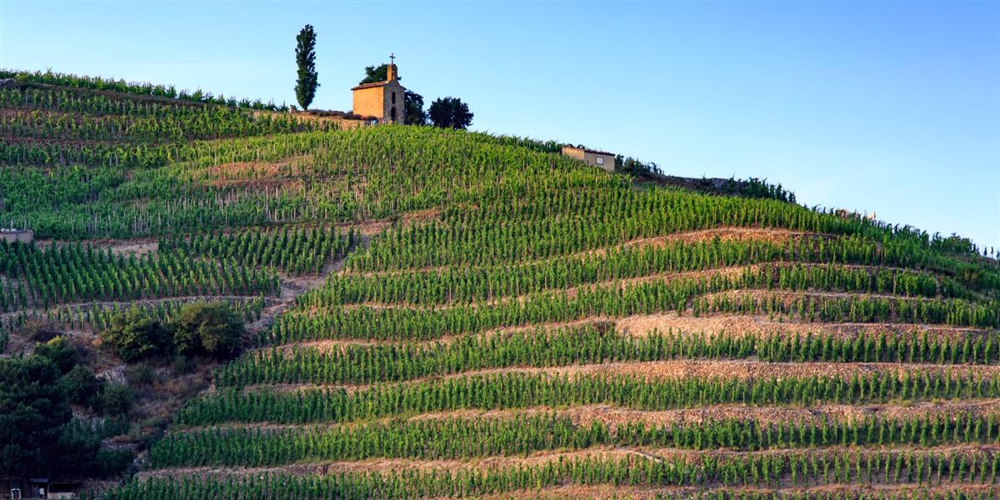

L'Hermitage, le vignoble qui inspire nos t-shirts Bon Vivre
Il y a des collines qui racontent une histoire avant même qu'on y pose le pied. La colline de l'Hermitage, qui domine la petite ville de Tain-l'Hermitage sur la rive gauche du Rhône, en fait partie. C'est l'un des vignobles les plus anciens de la vallée du Rhône septentrionale, un lieu que beaucoup d'amateurs de vin connaissent de nom, même sans jamais y être allés. Chez Bon Vivre, on a voulu lui rendre hommage à notre façon, avec un t-shirt qui porte son nom.
Une colline, un terroir, une identité
L'Hermitage n'est pas un vignoble comme les autres. Ses coteaux, exposés plein sud face au fleuve, bénéficient d'un ensoleillement généreux et de sols variés qui changent d'une parcelle à l'autre. C'est ce mélange de granit, de galets et de terres calcaires qui donne aux vins de la colline leur caractère si particulier. On est ici dans la partie nord de la vallée du Rhône, à quelques encablures de la Drôme et de l'Ardèche, ce territoire qui est un peu notre jardin depuis toujours.
Syrah, Marsanne, Roussanne : les cépages de la colline
Les vins rouges de l'Hermitage sont élaborés à partir de Syrah, ce cépage emblématique du Rhône septentrional qui donne des vins structurés, capables de vieillir longtemps en cave. Les vins blancs, eux, marient la Marsanne et la Roussanne, deux cépages qui apportent rondeur et fraîcheur florale. Ensemble, ils font de l'Hermitage un nom respecté par les amateurs de vin, bien au-delà des frontières de la région.
De la vigne au t-shirt : notre hommage
C'est cette colline et cette histoire viticole qui ont inspiré notre t-shirt Ermitage Bon Vivre. Confectionné en coton biologique, il porte imprimée une phrase qui résume assez bien notre philosophie : "Ici, le vin se boit entre copains !" Parce qu'au fond, un bon vin de la vallée du Rhône, ça se partage. Ce n'est pas fait pour être analysé tout seul dans un coin, c'est fait pour être ouvert un soir d'été, autour d'une table, avec les gens qu'on aime.
Le t-shirt Ermitage, disponible à 35 €, est notre façon de porter ce petit bout de Drôme-Ardèche partout où l'on va, que ce soit lors d'un apéro entre voisins, d'un barbecue de fin de semaine ou d'un week-end quelque part loin d'ici.
Un bon verre de vin partagé entre amis vaut toujours mieux qu'une grande bouteille bue seul.

Un vignoble, un état d'esprit
Ce qu'on aime dans l'Hermitage, ce n'est pas seulement la réputation de ses vins, c'est ce qu'il représente : de la patience, du soleil, un savoir-faire transmis, et surtout l'idée que les meilleures choses de la vie se dégustent lentement et à plusieurs. C'est exactement l'esprit qu'on essaie de mettre dans chacun de nos vêtements, entre la vallée du Rhône et nos apéros du dimanche.
La prochaine fois que vous croiserez une bouteille venue de cette colline, ou que vous porterez notre t-shirt Ermitage, pensez à cette phrase qui nous tient à cœur : le vin, comme les bons moments, ça se partage entre copains.
Envie de découvrir le t-shirt Ermitage et le reste de la collection ? Retrouvez tous nos t-shirts Bon Vivre ou allez voir directement le t-shirt Ermitage sur notre boutique en ligne, à découvrir ici ↗.